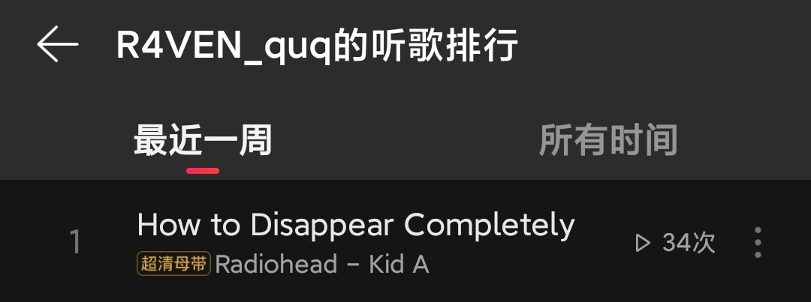

misaki
@misaki102113
@CascadingPallor radiohead是对的

CascadingPallor
@CascadingPallor
最近心情稍微差一点就会一直一直一直循环放Radiohead的How to Disappear Completely
听了心情也不会好会更低落但感觉极端的情况会少很多 宏大且混浊的混响给人一种奇妙的安心感像在海底被水压温柔包裹一样 慢慢的慢慢的就溶解了变成一摊东西发生什么都无所谓了
很新的一种comfort music https://t.co/FoSSUZ0kyb